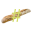

  <template>
    <require from="./resources/styles.css"></require>
    <require from="./terminalview"></require>
    <require from="./editor"></require>
  
    <nav class="navbar navbar-light bg-light border-bottom fixed-top" role="navigation">
      <a class="navbar-brand" href="#">
        
        <span>Baguette#</span>
      </a>
      <a class="nav-link active nav-item" href="https://github.com/coco33920">
        
      </a>
    </nav>


    <div class="side-navbar bg-light active-nav d-flex justify-content-between flex-wrap flex-column" id="sidebar">
      <div class="navbar navbar-light flex-column w-100">
        <a class="navbar-brand center ico" href="#">
          
        </a>
      <ul class="navbar-nav">
        <div class="container-fluid">
        <a href="#" class="nav-link">
          <span class="mx-2">Home</span>
        </a>
        <a href="#" class="nav-link">
          <span class="mx-2">About</span>
        </a>
        <a href="#" class="nav-link">
          <span class="mx-2">Contact</span>
        </a>
        </div>
      </ul>
      </div>
    </div>

    <div class="container">
      <div class="row">
        <div id="toclick" class="col terminalcolor no-float">
                  <terminalview class="terminalviewer terminalcolor" style="width: 100%;"></terminalview>
        </div>
        <div class="col no-float">
          <editor class=""></editor>
        </div>

      </div>
    </div>


    <div class="footer fixed-bottom bg-light active-nav d-flex justify-content-center flex-wrap">
      <div class="navbar navbar-light">
        <a class="navbar-brand mx-auto" href="https://github.com/coco33920" title="Find me on github">
          <i class="fa fa-heart" style="color: red;"></i>
          <span>Made with love by Charlotte THOMAS</span>
        </a>
       </div>
    </div>
  </body>
  </template>
  